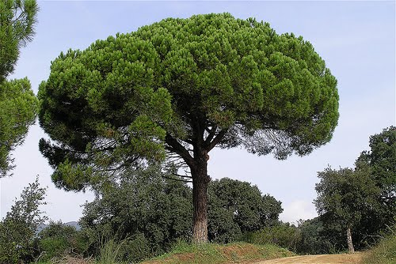
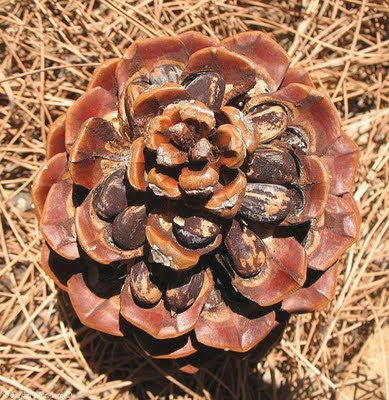

Pi pinyer
Descripció
El pi pinyer, pi pinyoner, pi de llei, pi campaner, pi para-sol, pi bo, pi ver o pi de pinyons (Pinus pinea) és una espècie de pi de la família de les pinàcies caracteritzat per tenir la llavor comestible: el pinyó, ja que si bé els pinyons d'altres espècies europees de pi també es poden menjar, són molt més petits (hi ha espècies americanes amb pinyons grans que s'exploten comercialment). És originari de la regió mediterrània.
Morfologia
Arbre de fins a 30 metres d'alçada, tronc amb l'escorça d'un marró rogenc molt gruixuda, capçada en forma de para-sol. Fulles de fins a 20 cm de llarg, agrupades de dues en dues com la resta de pins autòctons. Floreix de març a maig produint pinyes ovoides de fins a 15x10 cm amb pinyons d'15 a 20 mm. Les pinyes maduren a la tardor del tercer any, els altres pins ho fan en dos anys.
El pi pinyer creix per després obrir-se mitjançant branques de similar grossor en una copa arrodonida i aplatada, en forma d'ombrel·la. La superfície del tronc es caracteritza per disposar de plaques de color grisenc, separades per esquerdes vermelloses. Prefereix els sòls sorrencs.
Les pinyes són ovalo-esfèriques d'entre 10 i 15 cm de longitud i maduren al tercer any, donant uns pinyons coberts d'una dura escorça, d'1 cm de longitud, carnosos i saborosos, podent haver-hi pinyes en el seu primer any de maduració juntament amb altres llestes per ser recollides en la copa d'un mateix pi pinyer. La temporada de recollida de la pinya s'estableix entre els mesos de novembre i gener pels pinyers tots els anys.


Torna